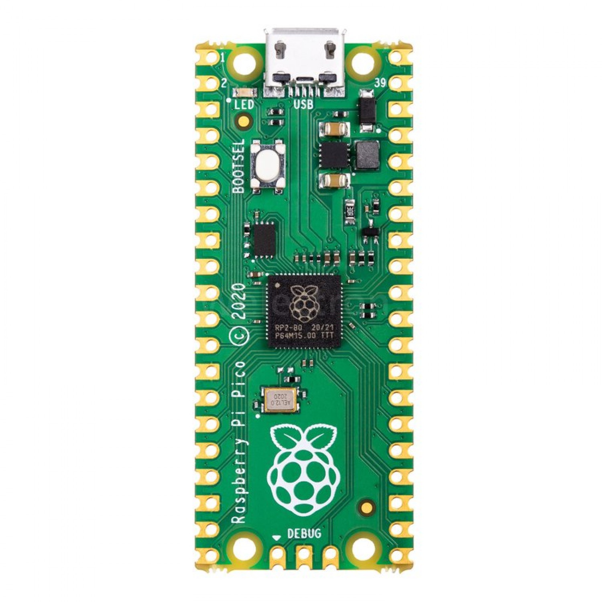
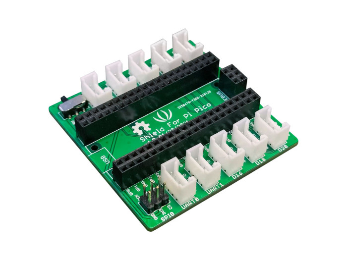
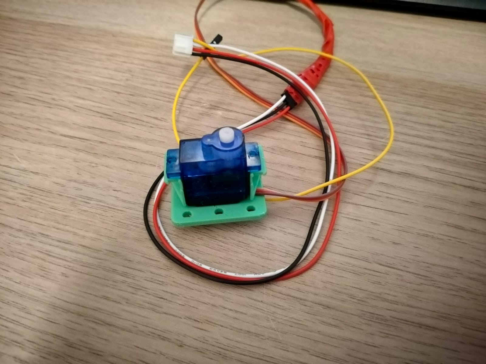
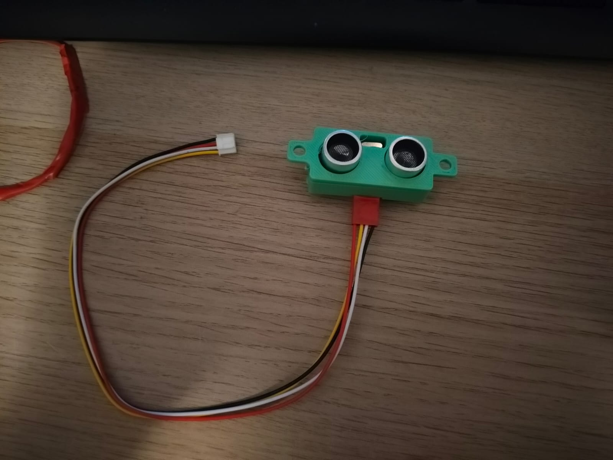
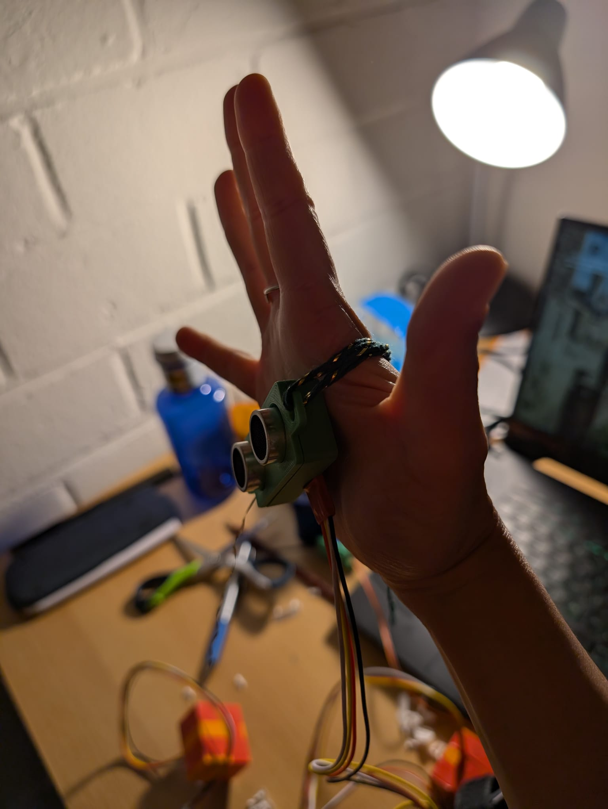
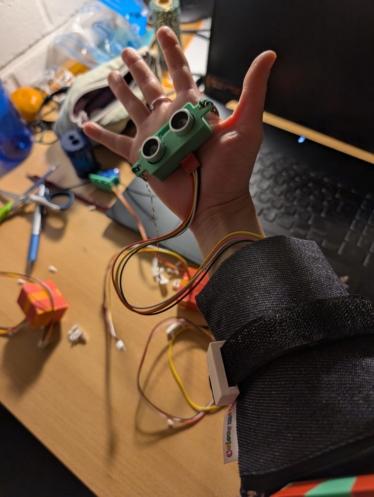

Building block assignment
Play ground Project
Inspiration
This was another university assignment were we had to make a tinkering playground which fostered creativity. A fun hands on workshop was created to illustrate how students could learn how to used Rasberry Pi Pico by creating a functional "superpower" device with sensors and actuators that can be powered by the Pico microcontroller.


The aim of the playground project is to get students to learn the basic functionalities of the Rasberry Pico. It is aimed at CreaTe students have a variety of who come from a variety of backgrounds but should be comfortable with basic programming. The whole project contains a variety of actuators and sensors which are made into modules to be much easier for the user to connect on the main hub the pico. The seed is therefore an easy to use plug and play toolbox for Rasberry Pico. The toolbox consists of different electronic components that have been modified to adapt to the plug and play approach. To overcome the technical hurdle, an online IDE called Pico blocks was used to help visualise how different parts could be coded together. A notable downside is that the library of picoblocks uses standard pins for their projects and pinout must be corrected manually from the python code. This can then be used as another scaffolding exercise since advanced users will be able to easily change the pins. The modules are easy to connect but you have to keep in mind that each category of the modules goes to a specific port. To help mitigate this technical hurdle, it was made easier for the students by adopting color coded cards of each module category. This also corresponded with basic the coding logic for a specific module to get them started! To simplify it for people who were not as advanced, each electronic component from our playground kit was concealed in cases which are illustrated below:



Scaffolding instructions/exercises
Before each playground session a set of short tasks should be done to prepare the students before undertaking the challenge. The first one being that the students should learn how to properly set up the pico by booting it with the proper firmware and libraries needed to code. A second task is to get familiar with the pico blocks environment IDE so they know where each specific component is and familiarising themselves with the facilitation cards. The third task would be for advanced users who wish to change the pin output.
Planning
The total time allocated for this session would be about 3 hours where 20 minutes are allocated to a demo and brief introduction of the Pico, its sensors and actuators and showcasing the possibilities. 30 minutes of the session group exploring premade modules by testing the sensors and actuators. Along with a mini brainstorm about their super power. About an hour and a half would then be given for students to assemble their code and projects with support from facilitators. 20 minutes will be given for group demonstrations and clean up respectfully. The location will be in the design lab to invoke creativity within the participants and there would be 2 tables with materials/ modules displayed so participants can get a feel of what is to come.
Prototyping and Testing
The pictures below show me group prototyping on making our plaground by pretending to be Ironman (prototyping a superpower that allows you to detect the closness of an object and warns you by spinning a motor). We were testing the functionalities of each electronic componentand trying to integrate them with the Pico blocks IDE so that example code snippets could be made. This video showcases the behind the scenes of make your own superpower playground.

